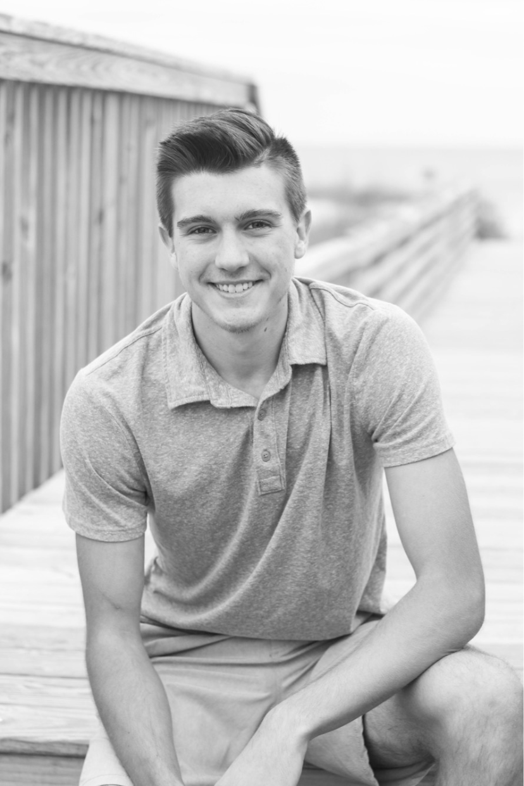

About
Born: Pineville, NC (2001)
Currently based in: Charlotte, NC (since 2021)
I’m an aspiring mechanical engineer currently enrolled at the University of North Carolina at Charlotte. As a junior in the program, I’m passionate about automation and aim to contribute to the industry by developing innovative, efficient solutions.
CV
Education
- Weddington High School (2015–2019)
- UNC Charlotte (2019–Present) — BS in Mechanical Engineering (Junior)
Work Experience
- Tractor Supply Co. (2020–2021) — Sales Associate
- Bounce House Man Inc. (2016–2019) — Setup Crew
Accomplishments
- Dean’s List (2019–2020)
- Weddington Optimist Essay Scholarship (2019)
Professional Statement
I’m driven to explore untapped potential and solve real-world challenges. I thrive in collaborative environments where innovation leads to solutions that benefit the greater good.